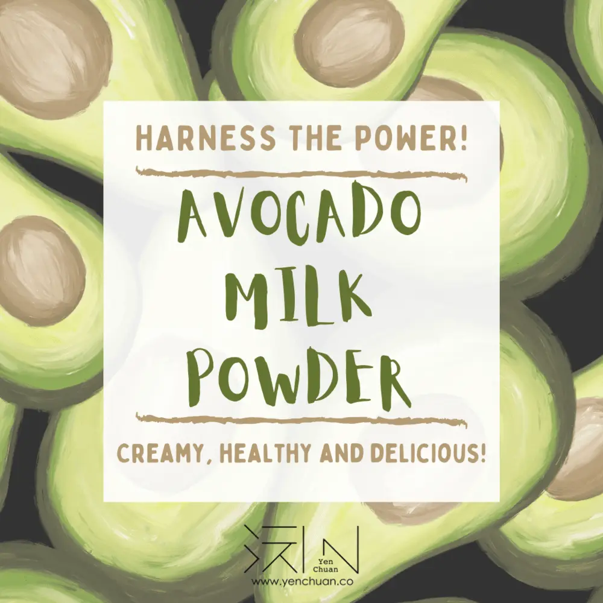
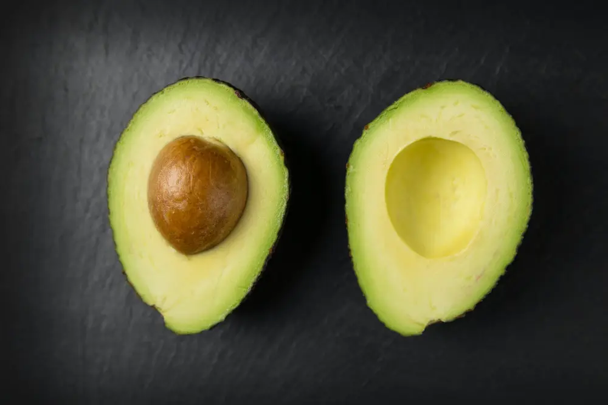
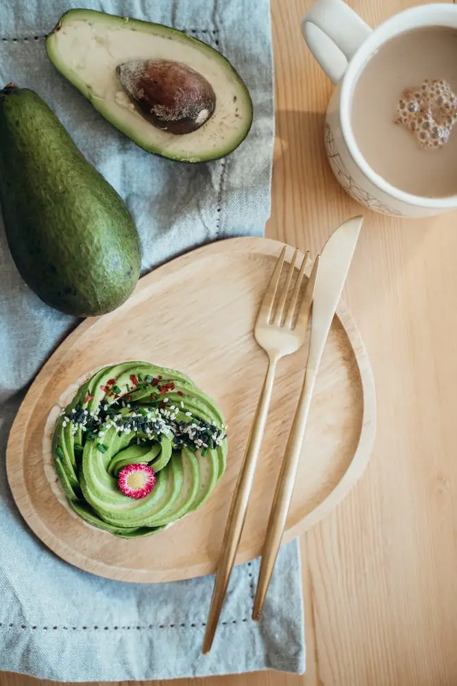
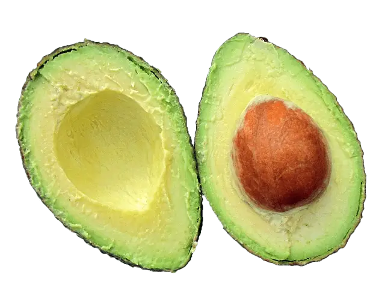

文章 / 飲品配方與資訊
Power up with avocado milk powder!
這篇是英文原文，尚未完成繁體中文翻譯。中文選單與相關商品連結不會切回英文介面。

查看英文原文（尚未翻譯）
Have you heard about avocado? This creamy, hearty fruit has been a rising star in recent years – drop by any café and you’ll find youngsters chatting away with avocado toast on hand. It’s also a staple in Mexican guacamole, and Southeast Asians happily sip avocado milkshakes in the hot summer day.
So what’s so special about this fruit? Read on to find out!
Why avocado?

It’s healthy
Avocado is known as a Superfood – food that is jam-packed with nutrients essential to all of us. It’s rich in various vitamins and minerals, especially vitamin K, folate and potassium.
The fruit also contains plenty of healthy monounsaturated fats, making them a great meat replacement for vegans. This type of fat, along with dietary fibres also helps lower cholesterol and prevent heart disease as well.
Weight-watchers rejoice: It’s also low in carbohydrates too!
It’s delicious
Avocado is also known as “butter fruit” in Cantonese and some Indian languages and it’s not hard to see why – the fruit has a smooth, almost butter-like texture and a subtle sweetness.
You can have it sliced and added to sandwiches, salads and other dishes, but why stop there? Pureed avocado can be turned into sandwich spreads, dips, milkshakes, sauces… you name it!
It’s eaten all over the world, not just as a health trend in the west, but also as everyday food in Southeast Asia, Africa and Central America.

What does this have anything to do with bubble tea?
Glad you asked!
Avocado smoothies and milkshakes are already popular in itself, but how do you boost its deliciousness even further? Tapioca pearls of course! Many bubble tea shops in the West and Southeast Asia have brought avocado bubble tea into their menus, loading them with chewy boba and delicious brown sugar.
Want to give it a try? Now’s your luck! With our avocado milk powder, making this bubble tea can’t get any easier. Mix up the drink, add tapioca pearls and there you have it. Want to spice it up further? Why not add some sliced or mashed avocado?
Don’t lose your chance
Drop us a message!
